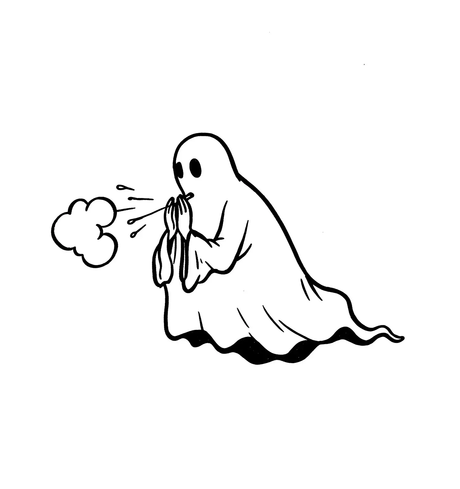

버티가 죽은 지 정확히 47일째 되던 날, 그는 자신이 살아있는 사람들에게 알레르기가 있다는 사실을 발견하고 유령으로서 크게 당혹스러워했다.
[Bertie had been dead for precisely forty-seven days when he discovered, much to his spectral chagrin, that he was allergic to the living.]
이 놀라운 사실은 그가 초보 유령 훈련을 마치고 17번째 유령 출몰 임무를 수행하던 중에 밝혀졌다. 버티 하운츠워스는 생전에 양말 서랍을 색상별로 정리하고 향신료 선반을 알파벳 순으로 배열할 정도로 꼼꼼한 주니어 회계사였으며, 사후 세계에서도 같은 세심함으로 임했다. 그는 유령 사무국 매뉴얼을 처음부터 끝까지 공부했고, 유령질 팔이 아플 때까지 쇠사슬 흔들기를 연습했으며, 세 가지 다른 신음 소리를 완벽하게 구사할 수 있었다.
[The revelation came during his seventeenth haunting assignment since completing his Novice Apparition training. Bertie Hauntsworth had always been meticulous in life—a junior accountant who color-coded his sock drawer and alphabetized his spice rack—and he approached the afterlife with the same fastidious attention to detail. He’d studied the Bureau of Haunting Affairs manual cover to cover, practiced his chain-rattling until his ectoplasmic arms ached, and perfected three distinct moaning timbres.]
하지만 이 모든 것도 펨브로크 저택 사건에 그를 대비시키지 못했다.
[None of which prepared him for the Pembroke estate incident.]
그는 어린 펨브로크 도련님의 침실 벽을 통과하며 시트를 극적으로 펄럭이고 전문적인 정확도로 쇠사슬을 흔들고 있었다. 그때 초자연적인 화물 열차처럼 재채기가 그를 강타했다.
[He’d drifted through the wall of young Master Pembroke’s bedroom, sheet billowing dramatically, chains rattling with professional precision—when the sneeze hit him like a paranormal freight train.]
“에에에-취우우우!”
[“AH-CHOOOOOO!”]
유령 형태에서 엑토플라즘 구름이 폭발하여 소년의 만화책 컬렉션에 튀었다. 펨브로크 도련님은 불행하게도 앞머리가 삐죽 솟아있고 초자연적인 것에 놀라울 정도로 관대한 12살의 주근깨 소년으로, 침대에서 고개를 들었다.
[A cloud of ectoplasm erupted from his spectral form, splattering across the boy’s comic book collection. Master Pembroke, a freckled lad of twelve with an unfortunate cowlick and a surprising tolerance for the supernatural, looked up from his bed.]
“에이고, 건강하세요,” 소년이 페이지를 넘기며 말했다. “침대 옆 탁자에 휴지가 있긴 한데, 당신한테는 소용없을 것 같네요.”
[“Bless you,” the boy said, turning a page. “There’s tissues on the nightstand, though I’m not sure they’d work for you.”]
버티는 당혹감에 그 자리에서 둥둥 떠다녔다. 이런 상황은 제7장: “첫인상: 당신의 유령 출몰을 의미 있게 만들기"에 나와있지 않았다.
[Bertie floated in place, mortified. This wasn’t covered in Chapter Seven: "First Impressions: Making Your Haunt Count.”]
“저기, 정말 죄송합니다,” 버티가 겨우 말을 꺼내며 위엄을 유지하려 했다. “제가 당신을 겁주려고 왔거든요.”
[“I say, terribly sorry about that,” Bertie managed, attempting to maintain his dignity. “I’m meant to be terrifying you.”]
“그래요? 그렇다면 꽤 형편없이 하고 계시네요,” 소년이 불친절하지 않게 대답했다. “공포를 수확하기보다는 꽃가루 알레르기로 고생하는 것처럼 보이는데요.”
[“Are you? You’re doing a rather poor job of it,” the boy replied, not unkindly. “You look more like you’re suffering from hay fever than harvesting fear.”]
버티는 자신의 시트를 바로 폈다. “살아있을 때는 알레르기가 전혀 없었는데 말이죠.”
[Bertie straightened his sheet. “I’ve never had allergies in my life.”]
“글쎄요, 지금은 더 이상 살아있는 게 아니잖아요, 그렇죠?” 펨브로크 도련님이 완벽한 논리로 지적했다.
[“Well, you’re not exactly in your life anymore, are you?” Master Pembroke pointed out with impeccable logic.]
“일리 있네요,” 버티가 인정했다. “그런데 왜 무서워하지 않나요? 대부분의 사람들은 비명을 지르거나 기절하거나 최소한 깨지기 쉬운 물건이라도 떨어뜨리는데요.”
[“Fair point,” Bertie conceded. “But why aren’t you scared? Most people scream or faint or at least drop something breakable.”]
소년은 어깨를 으쓱했다. “증증조할아버지가 시신을 옮기지도 않고 옛 묘지 위에 이 집을 지은 이후로 펨브로크 가문은 계속 유령들을 보고 있어요. 정말 무례한 짓이었죠. 그 이후로 유령들이 꾸준히 찾아오고 있어요. 당신은 이번 달에 세 번째인데, 알레르기가 있는 건 처음이네요.”
[The boy shrugged. “Pembrokes have been seeing ghosts since my great-great-grandfather built this place on an old cemetery without bothering to move the bodies first. Bit rude of him, really. We’ve had a steady stream of haunters ever since. You’re the third this month, though the first with allergies.”]
버티는 유령 사무국의 분명히 구식인 유령 출몰 데이터베이스에 대해 불만을 제기해야겠다고 마음속으로 메모했다.
[Bertie made a mental note to file a complaint about the Bureau’s clearly outdated haunting database.]
다음 날 아침, 버티는 유령 사무국 지역 지부에 보고했다. 내부자들이 B.H.A.라고 부르는 이곳은 규제 기관이자 최근 사망한 이들을 위한 지원 네트워크로, 그들이 생산적인 사후 세계 경력으로 전환하도록 돕고 있었다. 사무실은 생자의 세계에서는 버려졌지만 유령계에서는 번창하는 빅토리아 시대 건물에 위치해 있었고, “1742년부터 관료주의에 공포를 불어넣습니다"와 "당신의 사후 세계는 우리의 비즈니스입니다"같은 슬로건이 적힌 동기부여 포스터와 서류 캐비닛으로 가득한 "관료적 사후 세계 시크” 스타일로 꾸며져 있었다.
[The next morning, Bertie reported to the local branch of the Bureau of Haunting Affairs. The B.H.A., as insiders called it, served as both a regulatory agency and support network for the recently deceased, helping them transition into productive afterlife careers. The office occupied a Victorian building that had been abandoned in the living world but thrived in the spectral plane, decorated in what could only be described as “bureaucratic afterlife chic"—all filing cabinets and motivational posters with slogans like "PUTTING THE BOO IN BUREAUCRACY SINCE 1742” and “YOUR AFTERLIFE IS OUR BUSINESS.”]
대처 시대 초기에 사망한 그의 담당자 히긴스보텀 부인은 그 시대의 딱딱한 헤어스타일과 보수적인 옷 취향을 유지하고 있었으며, 투명한 얼굴에 논리적으로 걸칠 이유가 없는 반달 안경 너머로 그를 바라보았다.
[His case manager, Mrs. Higginbottom, who had died during the early Thatcher years and maintained both the rigid hairstyle and conservative dress sense of that era, peered at him over half-moon spectacles that had no logical reason to stay perched on her transparent face.]
“살아있는 사람에게 알레르기라고요?” 그녀가 반복했고, 그녀의 목소리는 사후 세계의 모든 변명을 다 들어본 사람의 지친 어조를 담고 있었다. “내가 죽은 이후 모든 세월 동안 그런 증상은 한 번도 본 적이 없어요.”
[“Allergic to the living?” she repeated, her voice carrying the weary tone of someone who had heard every excuse in the afterlife. “In all my years of death, I’ve never encountered such a condition.”]
“그럼에도 불구하고,” 버티가 주장했다, “제가 살아있는 사람에게 다가갈 때마다—에취!” 마치 신호라도 받은 듯이, 그는 격렬하게 재채기를 했고, 그의 엑토플라즘 막이 그 힘에 진동했다.
[“Nevertheless,” Bertie insisted, “whenever I approach a living person—ACHOO!” As if on cue, he sneezed violently, his ectoplasmic membrane vibrating with the force of it.]
히긴스보텀 부인은 머리 위로 날아가 “유령 출몰 사고: A-F"라고 표시된 서류 캐비닛에 튄 엑토플라즘을 피해 몸을 숙였다.
[Mrs. Higginbottom ducked as ectoplasm sailed over her head and splattered against a filing cabinet labeled "HAUNTING MISHAPS: A-F.”]
“음,” 그녀는 영적인 손수건으로 소매의 얼룩을 닦으며 말했다, “이건 확실히 이제 G-L 캐비닛에 들어가겠네요. 당장 레이스 박사에게 당신을 의뢰하겠어요.”
[“Well,” she said, dabbing at a spot on her sleeve with an ethereal handkerchief, “this is certainly going in the G-L cabinet now. I’m referring you to Dr. Wraith immediately.”]
사무국의 검시관인 레이스 박사는 1888년에 진단 중에 사망했으며, 다시는 미해결 사례를 남기지 않겠다고 결심했다. 그의 사무실 벽에는 액자에 넣은 의학 학위증이 줄지어 걸려 있었는데, 각각은 이전 것보다 약간 더 투명했고, 이는 수세기에 걸친 그의 지속적인 교육을 나타냈다.
[Dr. Wraith, the Bureau’s medical examiner, had died mid-diagnosis in 1888 and was determined to never leave a case unresolved again. His office walls were lined with framed medical degrees, each one slightly more transparent than the last, representing his ongoing education throughout the centuries.]
살아있는 식물, 바닷가재 유충이 든 테라리움, 그리고 특히 비협조적인 미스터 위스커스라는 햄스터(초자연적 의학 검사를 위해 특별히 직원으로 고용됨)를 포함한 일련의 검사 후, 버티는 공식적으로 진단을 받았다.
[After a battery of tests involving living plants, a terrarium of sea monkeys, and a particularly uncooperative hamster named Mr. Whiskers (kept on staff specifically for paranormal medical testing), Bertie was officially diagnosed.]
“당신은 사후 인간 알레르기 반응 증후군을 앓고 있습니다,” 레이스 박사가 핀스네 안경을 조정하며 발표했다. “유령 의학계에서는 PMAARS라고 부르죠.”
[“You’re suffering from Post-Mortem Anthropic Allergic Response Syndrome,” Dr. Wraith announced, adjusting his pince-nez. “PMAARS, as we call it in the spectral medical community.”]
“흔한 병인가요?” 버티는 손수건으로 엑토플라즘 코를 닦으며 물었다.
[“Is it common?” Bertie asked, dabbing at his ectoplasmic nose with a handkerchief.]
“꽤 희귀합니다,” 레이스 박사가 유령 콧수염을 돌리며 설명했다. “대략 만 명 중 한 명의 영혼에게 영향을 미치죠. 당신의 엑토플라즘 막이 살아있는 생물체가 생성하는 생체전기장에 과민감성을 발달시켰습니다. 그 결과 당신의 초자연적 세포 구조에서 히스타민 유사 반응이 일어나 과잉 엑토플라즘이 배출되는 것입니다—살아있는 의사들이 재채기라고 부르는 현상이죠.”
[“Quite rare,” Dr. Wraith explained, twirling his ghostly mustache. “Affects roughly one in ten thousand spirits. Your ectoplasmic membrane has developed a hypersensitivity to the bioelectric field generated by living organisms. The resulting histamine-adjacent response in your paranormal cellular structure causes the expulsion of excess ectoplasm—what living doctors would call a sneeze.”]
“치료법이 있나요?” 버티가 희망에 차서 물었다.
[“Is there a cure?” Bertie asked hopefully.]
“음, 살아있는 사람들을 완전히 피하는 방법이 있긴 하죠,” 레이스 박사가 제안했다, “하지만 그건 유령이 되는 목적을 완전히 무의미하게 만드는 일이 아닐까요? B.H.A.는 유령 출몰을 할 수 없는 유령들을 좋게 보지 않습니다.”
[“Well, you could try avoiding the living entirely,” Dr. Wraith suggested, “though that does rather defeat the purpose of being a ghost, doesn’t it? The B.H.A. doesn’t look kindly on haunters who can’t haunt.”]
버티는 풀이 죽어 시트가 그의 주위로 축 처지게 늘어졌다. 살아있을 때, 그는 평범했다. 죽은 후에는 뭔가 더 대단한 것을 바랐다—아마 명성까지는 아니더라도, 적어도 능숙함이라도.
[Bertie slumped, his sheet drooping dejectedly around him. In life, he’d been unremarkable. In death, he’d hoped for something more—perhaps not fame, but at least competence.]
“하지만,” 의사가 밝게 계속했다, “당신의 재채기가 꽤 흥미로운 패턴을 형성하는 것을 봤습니다. 사무국의 연례 탤런트 쇼가 다음 주에 있어요. 아마도 당신의… 이 상태를… 창의적으로 활용할 수 있을 것 같은데요? 생체 소품부에서 적절한 알레르기 유발 물질을 제공할 수 있을 겁니다.”
[“However,” the doctor continued, brightening, “I’ve seen how your sneezes form quite interesting patterns. The Bureau’s annual talent show is coming up next week. Perhaps your… condition… could be put to creative use? The Living Props Department could provide you with suitable allergic triggers.”]
“생체 소품부라고요?” 버티가 물었다.
[“Living Props Department?” Bertie asked.]
“오 그럼요,” 레이스 박사가 대답했다. “더 고딕한 유령 출몰에 필요한 까마귀들이나 바닥을 불길하게 달리는 쥐들을 어디서 구한다고 생각하세요? 우리의 모든 효과가 단순한 엑토플라즘 조작만으로 이루어지는 건 아니랍니다.”
[“Oh yes,” Dr. Wraith replied. “Where do you think we get the ravens for the more gothic hauntings? Or the mice that scurry ominously across the floor? Not all of our effects can be accomplished with mere ectoplasmic manipulation.”]
그리고 이렇게 해서, 점점 더 복잡한 생물 배치로 3일간의 집중 연습 후, 버티는 사후 세계 최고의 유령 버라이어티 쇼인 “유령들의 탤런트"의 무대 뒤에서 긴장하며 떠다니고 있었다. 다행히도 모두 고인들로 구성된 관객들은 1926년부터 같은 농담을 해오던 보드빌 출신 사회자가 다음 출연자를 소개하는 동안 기대에 차 기다리고 있었다.
[And that was how, after three days of intensive practice with increasingly complex living arrangements, Bertie found himself floating nervously backstage at "Ghosts Got Talent,” the afterlife’s premier spectral variety show. The audience—comprised entirely of the deceased, thankfully—waited in anticipation as the master of ceremonies, a vaudevillian who had been telling the same jokes since 1926, introduced the next act.]
“이제, 신사 숙녀 여러분, 그리고 자신이 어느 쪽이었는지 더 이상 기억하지 못하는 분들, 무대에 오신 것을 환영합니다… 환상적인 재채기 유령!”
[“And now, ladies and gentlemen and those who no longer remember which they were, please welcome to the stage… The Spectacular Sneezing Spook!”]
버티는 무대로 떠올랐고, 그곳에는 작은 테이블 위에 조심스럽게 배치된 일련의 테라리움이 놓여 있었다. 각각에는 다양한 생물체들이 들어 있었다—햄스터 미스터 위스커스, 작은 고사리, 금붕어, 그리고 가장 인상적으로, 이국적 유령 출몰 부서에서 빌려온 잉꼬.
[Bertie drifted onto the stage, where a carefully arranged series of terrariums sat on small tables. Each contained different living creatures—the hamster Mr. Whiskers, a small fern, a goldfish, and most impressively, a parakeet on loan from the Exotic Hauntings Division.]
버티가 첫 번째 테라리움에 다가가자, 그는 엑토플라즘 부비동에서 익숙한 간지러움을 느꼈다. 관객들은 자리에서 앞으로 몸을 기울였다.
[As Bertie approached the first terrarium, he felt the familiar tickle in his ectoplasmic sinuses. The audience leaned forward in their seats.]
“에에-취우우우!”
[“AH-CHOOOO!”]
재채기는 버티를 완벽한 공중제비를 돌며 뒤로 날려보냈고, 동시에 수 시간의 연습 끝에 의도적으로 여왕의 옆모습 형태로 엑토플라즘 구름을 형성했다. 관객들은 박수갈채를 보냈다.
[The sneeze propelled Bertie backward in a perfect loop-de-loop while simultaneously releasing a cloud of ectoplasm that formed, quite deliberately after hours of practice, into the shape of the Queen’s profile. The audience erupted in applause.]
고사리로 이동하며, 버티는 다음 재채기를 신중하게 집중하여 유도했다. “에취우우우!” 그 결과 나온 엑토플라즘 구름은 작은 빅벤까지 완벽하게 갖춘 런던 스카이라인의 그럴듯한 재현을 형성했다.
[Moving to the fern, Bertie channeled his next sneeze with careful focus. “ACHOOOO!” The resulting ectoplasmic cloud formed a passable rendition of the London skyline, complete with a miniature Big Ben.]
그의 공연이 끝날 무렵—점점 더 복잡한 엑토플라즘 조각상을 만들어내는 정확하게 시간 배분된 7번의 재채기 교향곡으로, 미켈란젤로의 다비드상 재현으로 절정을 이루었다—버티는 관객들이 자리에서 일어나 기립 박수를 치며 떠다니게 만들었다.
[By the end of his performance—a symphony of seven precisely timed sneezes that created increasingly complex ectoplasmic sculptures, culminating in a recreation of Michelangelo’s David—Bertie had the audience floating out of their seats in a standing ovation.]
히긴스보텀 부인이 공연 후 그에게 다가왔고, 평소 엄격한 표정에 드물게 미소가 떠올랐다.
[Mrs. Higginbottom approached him afterward, a rare smile haunting her usually stern features.]
“음, 버티, 당신은 자신의 소명을 찾은 것 같군요. 사무국에서는 당신에게 우리 홍보부서의 자리를 제안하려고 합니다. 우리는 최근 사망한 이들 사이에서 우리의 이미지를 개선할 방법을 찾고 있었거든요. 당신의, 음, 예술적 재능이 신참자들에게 전환 과정을 덜 두렵게 만드는 데 도움이 될 수 있을 것 같아요.”
[“Well, Bertie, it seems you’ve found your calling. The Bureau is prepared to offer you a position in our Public Relations department. We’ve been looking for ways to improve our image among the recently deceased. Your, ah, artistic talents could help make the transition less frightening for newcomers.”]
“제가 더 이상 유령 출몰을 하지 않아도 된다는 말씀인가요?” 버티는 자신의 행운을 감히 믿을 수 없어 물었다.
[“You mean I don’t have to haunt anymore?” Bertie asked, hardly daring to believe his luck.]
“내 친애하는 청년,” 히긴스보텀 부인이 말했다, “당신은 불리해 보이던 것을 자산으로 바꾸었어요. 그것이 바로 우리가 사후 세계에서 가치를 두는 종류의 주도성이죠. 게다가, 펨브로크 저택에서는 최소 6개월 동안 유령 출몰이 없기를 공식적으로 요청했어요. 초판 만화책에서 엑토플라즘을 제거하기 어렵다는 이유로 말이죠.”
[“My dear boy,” Mrs. Higginbottom said, “you’ve turned what appeared to be a liability into an asset. That’s the kind of initiative we value in the afterlife. Besides, the Pembroke estate has filed a formal request to remain ghost-free for at least six months. Something about ectoplasm being difficult to remove from first-edition comics.”]